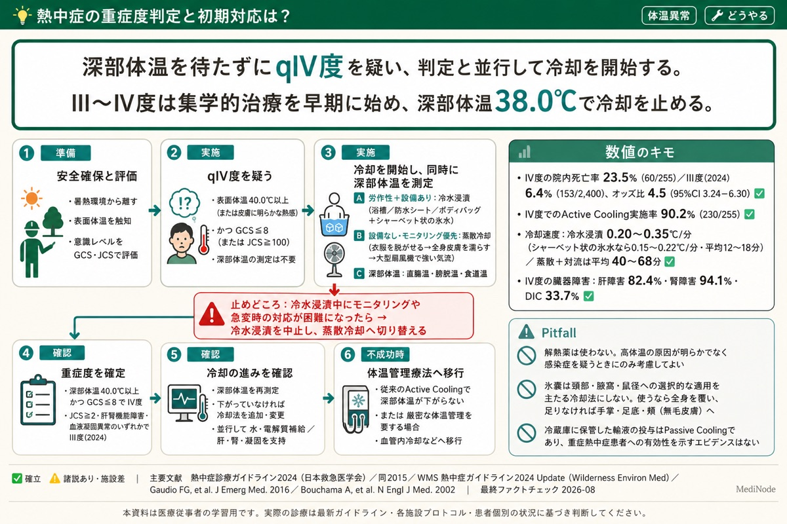

救急・集中治療の専門医が選んでまとめた医療ナレッジ・参考文献を、自分のメモと同じ画面で。ガイドラインの要約だけでなく、専門医が「自分はこうする」まで書き添えた一節つき。集める前から、確かな知識がそばにあります。
自分のNotionに医療知識を一から書きためるには、時間がかかります。たまるまでは、検索しても何も出てきません。
専門医がすでに作り込んだ知識ベースが、最初から入っている状態に。あなたは集める前から、確かな知識を検索・クイズで使えます。
具体的には、作者（救急科・集中治療専門医の Dr.ノード）が継続的にメンテナンスする 医療ナレッジDBと参考文献DBを、アプリ内で配信。 あなた自身のメモ（個人）・職場の知識（部署）と同じ画面に並べて引けます。 臨床で「使える形」に整理された知識が、設定なしで手元にそろいます。
教科書やAIの要約は、どこにでもあります。MediNodeプレミアムのナレッジには、その先に救急・集中治療の専門医が現場でどう判断しているかを、本人の言葉で書き添えています。
ベッドサイドで本当に効くのは、「正解」よりも「経験者ならどこを見て、何を優先するか」だったりします。プレミアムの各ナレッジには、専門医が実際の手順・迷いどころ・後輩に必ず伝えることを綴った「集中治療医の実践」の一節が入っています。
表面体温と意識だけでqIV度と判断できた時点で、深部体温計と、水の噴霧・送風に必要な器材を集めます。
冷水浸漬（アイスバス）は冷却効果は高いですがモニタリングが困難で、設備も人手も揃わないことが多いため、その場で実施できる他の方法から冷却を始めます。
最近は夏場の屋外のスポーツ大会でも、アイスバスを導入する大会が増えてきています。
※筆者の実践です。施設・症例により判断は異なります。
収録例：「熱中症の重症度判定と初期対応は？」より（2026-08 査読済み）
現場でぶつかった「これ、どうする？」を投稿すると、専門医が調べて回答し、プレミアムナレッジに加えていきます。解決したら、アプリにお知らせが届きます。
浮かんだ疑問を、その場でそのまま書けます。
♡ 2人が気にしています ・ 集中治療医
♡ 1人が気にしています ・ 医師
RSBI＜105、SpO₂・呼吸数・循環の安定を確認。私はまず…
あなたの投稿は、みんなの知識になります。実名は表示されず（職種とペンネーム、または匿名）、できあがったナレッジは他のプレミアム会員も引けるようになります。現場の一つの疑問が、みんなの知識に育ちます。 ※個別の回答をお約束するものではなく、反映までお時間をいただくことがあります。
1つのナレッジを、図解・数値・カットオフ・出典つきで整理しています。本文はアプリ内でそのまま読めます——医学書に寄せた組版で、要点モード・本文内検索つき。検索やクイズから、そのまま引き出せます。

収録例：熱中症の重症度判定と初期対応は？（2026-08 査読済み）
専門医が選んでまとめた知識を、あなたの知識と並べて、全タブで活用できます。
ガイドラインの要約だけでなく、専門医が「自分はこうする」を書き添えた一節つき。教科書に載らないさじ加減や、研修医への一言まで。
気になる臨床疑問を投稿すると、専門医が回答し、プレミアムナレッジに反映。まだ答えの出ていない問いは「みんなの臨床疑問」に浮かび、気になる問いに印をつけられます（多くの人が気にする問いから答えていきます）。解決するとお知らせが届きます。
個人・部署・プレミアムを「全て」で統合検索。自分のメモと専門医の知識を、同じ画面で並べて確認できます。
ナレッジだけでなく、根拠となる参考文献（ガイドライン・論文）も収録。柱になる論文は精読ノート（PICO・主要結果・限界・考察まで）、支持する文献は文献カード（位置づけと要点）と、深さを使い分けて配信します。
検索タブの一番上に、監修ナレッジから毎日1問。通知でも受け取れます（1日1問だけ・いつでもオフにできます）。開くたびに1つ、確認する習慣が作れます。
本文までアプリ内で読めます。医学書に寄せた組版で、本文内検索・要点モード・「つづけて読む」つき。読んで役に立ったら、ワンタップで「役に立った」を送れます（多く押されたナレッジから磨いていきます）。
あなた個人のNotionもAlgoliaも不要。シンプルモードのままでも利用でき、登録すればすぐ表示されます。
メールアドレスだけでもログインでき、スマホ・PCなど複数端末に契約を引き継げます。
解約はいつでも可能。手続き後、次回更新日以降の課金は発生しません。気軽に試せます。
救急・集中治療の現場で実際に浮かぶ疑問を、エビデンスに基づいて整理。検索すれば、その場で答えに辿り着けます。
緊急透析はいつ始める？（AEIOU）
ショックの輸液、いつ攻めて・いつ引く？（ROSE）
尿量が出ない。どこから評価を始める？
人工呼吸器、最初に確認すべき設定は？
「ムセる」患者、誤嚥のリスク評価はどうする？
経腸栄養はいつから・どう進める？
※ 収録内容は継続的に追加・更新されます。
救急・集中治療は、多職種で患者を支える現場。職種や専門の垣根を越えて役立ちます。
各タブの「⭐プレミアム」フィルタ、または設定パネルの登録ボタンから手続きできます。
読む・訊く・引ける。月980円で、救急・集中治療の専門医がそばに。専門医の「私はこうする」まで読めて、気になる疑問は代わりに調べて答えてくれます。知識をまとめ買いするのではなく、専門医のサポートを毎月受けとっていく——そんな形です。
お申し込み・コードの入力・お支払いは、アプリ内で行います（決済代行：Stripe。カード情報はStripeが管理し、アプリは保持しません）。無料コードはDr.ノードのnoteで配布しています。
※ サービス内容の向上・維持のため、将来的に料金を改定する場合があります。変更する際は、事前にアプリ内やnote等でお知らせします。